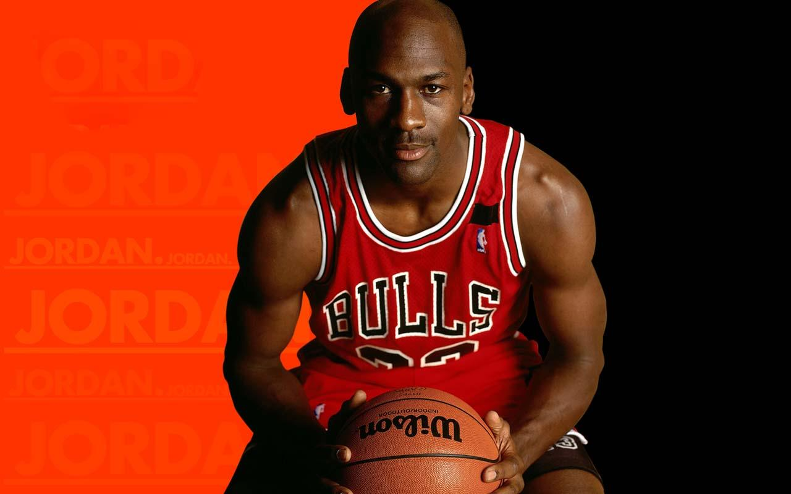

|
Michael Jordan, nacido el 17 de febrero de 1963 en Brooklyn, Nueva York, es considerado por muchos como el mejor jugador de baloncesto de la historia. Con una altura de 1.98 metros, jugó como escolta en la NBA, destacándose por su habilidad para anotar, su defensa implacable y su capacidad para elevar el juego en momentos decisivos.
Durante su carrera, Jordan llevó a los Chicago Bulls a seis campeonatos de la NBA (1991–1993, 1996–1998), siendo nombrado MVP de las Finales en cada una de esas ocasiones. Además, ganó cinco premios MVP de la temporada regular y diez títulos de máximo anotador. Su promedio de 30.1 puntos por partido en temporada regular es el más alto en la historia de la liga. .
menu principal
|

 MICHAEL JORDAN
MICHAEL JORDAN